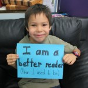

Been thinking a lot about happiness….
I’m happily off to visit my daughter in Vancouver during the February break. She’s finding her place in Vancouver and is settled there. When our children were young, my friend and I always said we just wanted our kids to be happy when they grew up. We often repeated that statement, but as our children grew, our definition of happiness was challenged. The friends, schools, and life directions they chose weren’t always what we believed would make them happy. I discovered that I had to let go of what I wanted for my daughters to be happy and let them discover what they needed for their own happiness. Although stability and consistency bring me happiness, these same things do not provide my daughters with the same joy. Happiness is a personal state.
“Clap if you know what happiness means to you.” I came across this line from Pharrell Williams’ song “Happy,” as I was searching for a celebratory song for our newly implemented reading intervention. The data that we collected after our first session showed that all students involved had achieved more than we had hoped for. We had cause to celebrate. I put together a slideshow and needed a song to set the joyful mood. As I watched Pharell’s video, I was smiling all the time. There are people of all ages, sizes and races, happily dancing their own dance. It made me think of the variety of students and teachers as they danced through the intervention. When we find the right intersection between quality programming and quality instruction, students will succeed. Success is essential to happiness.
#://learning.lskysd.ca/curriculumconnections/files/2015/02/LLIsession1.mp4
Alison Behne, in a post on The Daily Café quotes her young son saying he wants a job where he gets to make kids happy. She goes on to say that we (educators) are in the business of making kids happy. But, what does make students happy? It isn’t just loving them and telling them they are wonderful; loving my own children isn’t enough for them to find their own happiness. It isn’t about making everything fun and lively. Students need joy in their lives, no doubt. But again, laughter and activity isn’t enough.
I believe that students feel good about themselves when they learn to work hard and strive towards excellence. A recent experience nuanced that belief. I work with a youth choir. We seem to acquire very engaged, intelligent singers with strong family support. We can push them hard and often say to them, “You are smart and you are good, so now we’re going to challenge you even more.” Recently, one of our younger singers taught us a lesson. She was leaving rehearsals upset and finally wanted to quit. After sitting down with her to find out why, we realized that what she was hearing from us was not “You are smart and good,” but rather, “Even though you are trying, it’s not enough.” We weren’t giving her enough compassion and laughter. Providing challenge isn’t enough for our students’ happiness.
How do we encourage happiness in students? In Teachers? In Consultants? I wish there was a simple answer . As we strive to balance compassion, joy, success and challenge, perhaps we can guide our students and ourselves as educators to find the individual ingrediencts themselves that will provide their happiness. We can then join with Pharell Williams and “Clap because I know what happiness means to me! “
I’m happy I finally completed a blog post!
Share your latest moment of happiness….